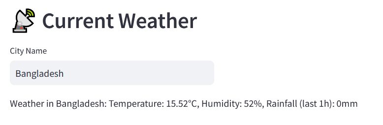
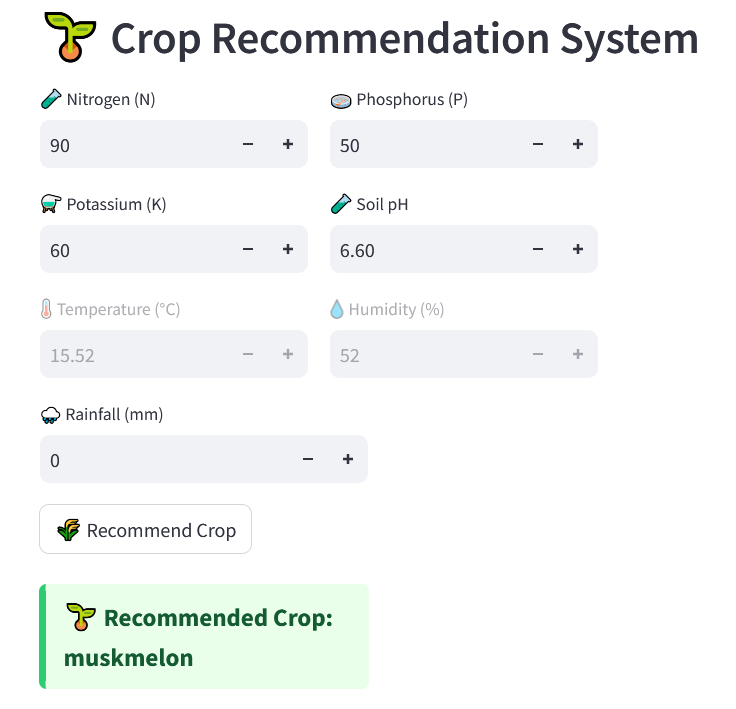
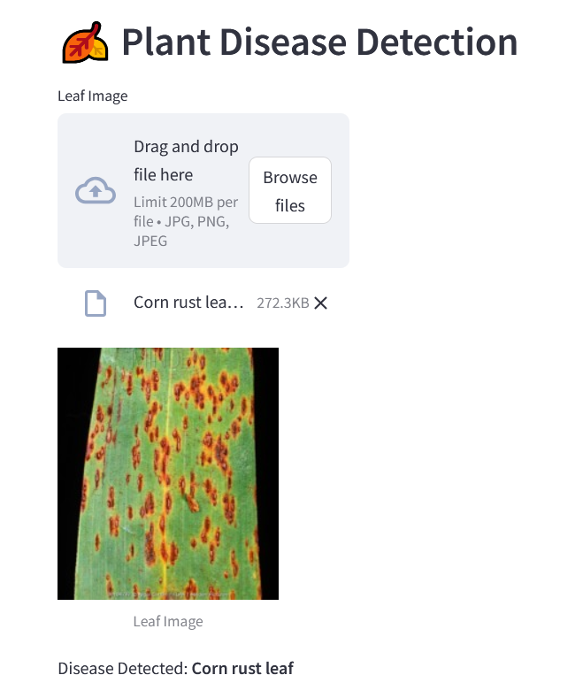
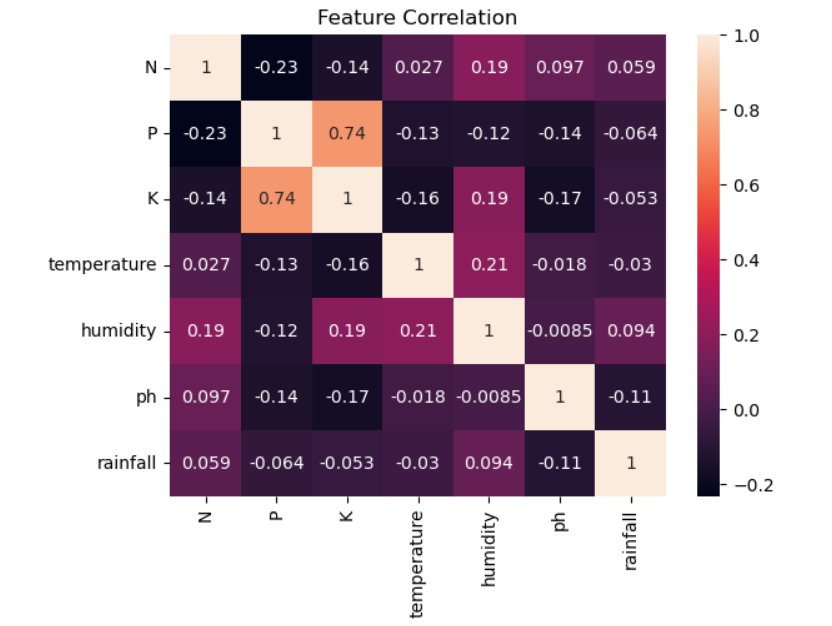

Developed an intelligent, AI-powered dashboard designed to assist farmers in making data-driven decisions for improving agricultural productivity. The system empowers farmers to make informed agricultural decisions by recommending the best crop to plant and detecting crop diseases from leaf images. It integrates user-provided soil data with real-time environmental inputs to deliver personalized insights that enhance crop yield and reduce losses.




User Interaction & Dashboard Interface:
Impact & Benefits:
🔧 Under Construction; more features will be added.
View Code